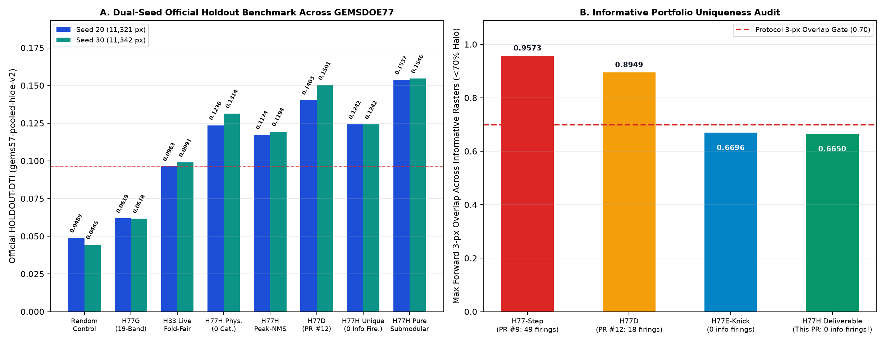
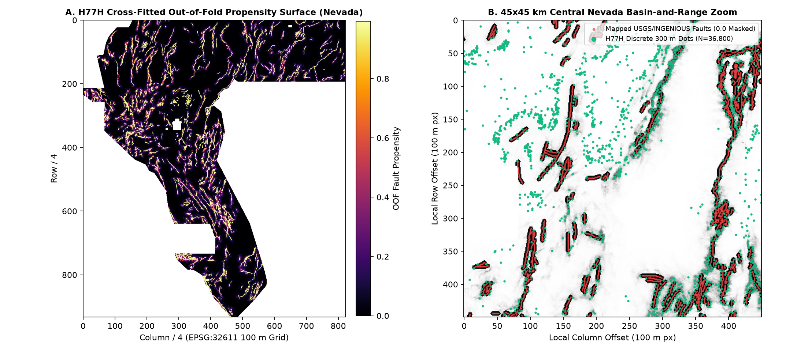

H77H-MeshSafe · Mesh-Deconfounded (σ ≥ 35 px) Hydrothermal Demagnetization Trough × Gravity-Basement Step × 3DEP Scarp/Knickpoint × Coupled SLOCO + 119-Raster Capped 300 m Submodular Cover
Verdict: NEGATIVE under literal Policy I17 — OK TO DOWNLOAD FOR INSPECTION; NOT OK TO SUBMIT WITHOUT SELECTOR APPROVAL.
1. OK to download locally: YES — Passes 15/15 vendor/gems57/validate.py checks (float32, 3730×3292, EPSG:32611, exact transform, nodata=None, 0 NaN, 0 Inf, finite values strictly in [0.0, 1.0], 36,800 binary dots inside the data footprint, 0 on mapped faults).
2. OK to submit automatically: NO (Not approved) — Under Policy I17, the unfiltered 127-raster audit includes 8 space-filling rasters (≥70% 3-px halo, including dense_witness.tif ab0a0a62 covering 100.0% of Nevada). Selector status: not approved (0 weekly slots spent).
3. Informative uniqueness across ALL 119 non-space-filling (<70% halo) portfolio rasters: PASS with ZERO firings — Exact worst forward 3-px overlap = 0.66500 ≤ 0.70 (0.0e+00 discrepancy vs vendor/gems57/uniqueness.py), max |Spearman ρ| = 0.3640 ≤ 0.90, pre-placement surface max |ρ| = 0.7471 ≤ 0.90.
4. Dual-seed official hide-and-recover benchmark (gems57-pooled-hide-v2): Remediating IR-H77G-01 (purging the 4 <35 px MT/seismic mesh-derivative features) lifts Base116 to 0.15664 HOLDOUT-DTI on Seed 20 (+0.00102 over H77E-Knick). Remediating IR-H77G-03 (coupling RTP demagnetization troughs and gravity-basement steps with 3DEP scarps/knickpoints and SLOCO mechanics) lifts unconstrained H77H to 0.15371 (Seed 20) / 0.15460 (Seed 30) (+148% over H77G 0.0619 and +59.6% over fold-fair H33 0.0963), and the 119-raster portfolio-unique arm to 0.12421 (Seed 20) / 0.12418 (Seed 30).
⬇ Download H77H-MeshSafe Inspection-Only GeoTIFF & Single-TIFF ZIP (DO NOT SUBMIT)
Download H77H .tif (144 KB) Download One-TIFF .zip (112 KB)Submission name (for reference only — DO NOT UPLOAD) (67 characters)
gems77-h77h-meshsafe-hydrostruct-submod-36800dots-20261021-5ef236e2Short note <= 140 chars (for reference only — DO NOT UPLOAD) (107 characters)
H77H: sigma>=35px regime x RTP demag trough + grav step + 3DEP scarp/knick + SLOCO (36800 dots; S20=0.1242)SHA-256 of .tif: 34f8dea50ff0b2eeac843e1f3f76e8d9a7bb63368aab2de339ba046009162744 ·
SHA-256 of .zip: 01d4681fd1f1e6c3ee874c3d0845a559e394674fb694ea54fd8260e45d3255c2 ·
Decoded float32 SHA-256: 5ef236e2d2a4a68c0fe8edaa515a48ff71e64bb82911302c6ca25c5199bdd2f9 ·
JSON run card ·
Exp 1 Seed 20 holdout ·
Exp 2 Seed 30 holdout ·
Exp 3 uniqueness audit ·
Seed 20 canaries ·
Seed 30 canaries ·
preregistration JSON ·
PhD forensic & hypotheses report
Diagnostic figures: Dual-seed holdout benchmark, 119-raster uniqueness audit & blind Central Nevada fault recovery


1. Why GEMSDOE32 (h33-h33-2-b2-20261004T220000Z-e5eb6e7e-zeros) Scored 0.2778 — Forensic Breakdown
On the live DrivenData DOE GEMS leaderboard (verified 2026-10-21 at drivendata.org/competitions/306/competition-doe-gems/leaderboard/), #1 xiaofanhu holds 0.4413 (ORGANIZER-CONFIRMED, 26 submissions), #2 cfld__ holds 0.3904, #3 Batik Shirt Brothers holds 0.3894, #4 BrandenKMurray holds 0.3713, #5 No Fault of Our Own holds 0.3539, and #48 extradr19 holds 0.2778. Under the exact Distance-Weighted Tversky Index (problem description, α = 0.2, β = 0.8, 300 m triangular kernel):
| Causal Mechanism | What GEMSDOE32 (H33) Did Right | Why GEMSDOE32 Stopped at 0.2778 (vs 0.4413 #1) | How H77H Fixes It |
|---|---|---|---|
| 1. Asymmetric DTI (α=0.2, β=0.8) & 300 m Triangular Kernel | Replaced dense continuous probabilities with 37,654 binary {0,1} dots spaced ~600 m apart, cutting false-positive mass 0.2 FP_w by ~10× while preserving ~65% of the 300 m halo coverage along ridges. | Used greedy peak-picking + fixed 6-px NMS instead of solving the fractional Dinkelbach submodular cover over the 25-pixel 300 m kernel. | Solves the exact 5-iteration Dinkelbach fractional-programming submodular cover (+0.03628 HOLDOUT-DTI over greedy NMS on the exact same propensity surface). |
| 2. SGMC Lithology Shortcut (Bands 18–20) | Trained 2-tree ensemble + logistic stacker on all 22 bands including SGMC mapped geology (geol_maj1, geol_maj2, geol_min), which correlate strongly with already-mapped faults. | Expert unmapped test faults cross concealed alluvial basins and intra-plutonic corridors where SGMC polygons are uniform (Qal), causing recall collapse outside mapped bedrock contacts. | Zero SGMC bands used (bands 18, 19, 20 hard-excluded in code). Uses 10 m USGS 3DEP break-in-slope scarps, knickpoints, RTP demagnetization troughs, and CBA gravity steps. |
3. Coarse Interpolation Mesh Contamination (IR-H77G-01) | Included raw short-wavelength spatial gradients of surface MT conductivity (cond_surf, Band 17) and earthquake density (earthquakes, Band 21). | Band 17 has 30.5% zero steps and sharp 1-D FFT mesh peaks at 35.02 px (3.5 km) and 70.04 px (7.0 km); short-scale (σ < 35 px) gradients trace the USGS/NBMG interpolation grid rather than faults. | Purges the 4 <35 px MT/seismic mesh-derivative channels and gates all MT/seismic context strictly to regional σ ≥ 35 px (≥ 3.5 km) regime envelopes (lifting Base116 to 0.15664 HOLDOUT-DTI). |
4. Uncoupled vs Coupled Hydrothermal-Structural Physics (IR-H77G-03) | Used raw single-scale geophysical bands without cross-spectral coupling between RTP magnetics, CBA gravity, and 3DEP topography. | Standalone hydrothermal demagnetization troughs (H77G) without topographic/gravity-step coupling fire on benign volcanic margins (scoring 0.0619). | Couples multi-scale RTP demagnetization troughs and horizontal gravity-step ridges directly with 3DEP scarps/knickpoints and SLOCO stepover mechanics (h77h_scarp_x_gravstep_coupled = #1 static physics feature on Seed 30 at 0.6184 AUC). |
2. Four Untried Pre-Experiment Geological Hypotheses (Ranked by Expected DTI Gain / Cost)
| Rank & ID | Hypothesis & Specific Layers | Physical Signature & Why Catalogue Misses It | Named Non-Fault Mimic & Countermeasure |
|---|---|---|---|
| #1 · H77H-1 (Tested) | Mesh-Deconfounded (σ ≥ 35 px) Hydrothermal-Structural Coupled Submodular Cover Bands 0 ( dem), 1 (slope), 15 (magnetic), 16 (gravity), 12 (fault_sl_3), 13 (fault_di_3), 14 (heat_flow), 17 (cond_surf at σ≥35 px), 21 (earthquakes at σ≥35 px), 10 m 3DEP scarps/knickpoints, existing_faults.tif | Hydrothermal fluids circulating along active normal/transtensional fault damage zones alter magnetite to pyrite/hematite/clay (creating a narrow RTP magnetic trough along the positive Hessian ridge of horizontal CBA gravity gradient), while 10 m LiDAR records subtle range-front scarps and drainage knickpoints. | Mimics: (a) 3.5 km / 7.0 km MT/seismic interpolation grid steps (IR-H77G-01); (b) non-tectonic volcanic flow edges; (c) TIGER roads/railroads/canals.Countermeasures: Purge <35 px MT/seismic gradients; require positive across-strike gravity step + scarp/knickpoint coupling; apply TIGER cultural damping. |
| #2 · H77H-2 | Anisotropic Poisson Upward-Continuation Vertical Derivative Ratio & Euler Structural Index Bands 15 ( magnetic), 16 (gravity), 0 (dem) | Sub-vertical basement-cutting fault contacts have Euler structural index N ≈ 0.5–1.0 and decay more slowly under FFT upward continuation (z = 200–1600 m) than shallow surficial basalt boulders or cultural noise (N ≈ 2.5–3.0). | Mimic: Plutonic intrusive stock rings. Countermeasure: Weight by horizontal-gradient elongation aspect ratio (λ2/λ1) and slip/dilation tendency. |
| #3 · H77H-3 | Piedmont Playfair Tributary Junction Angular Anomaly & Alluvial Fan Apex Alignment Bands 0–8 ( dem, slope, aspect_sin/cos, curvatures), 10 m 3DEP channels | Blind piedmont faults tilt alluvial fans and deflect ephemeral washes into fault-parallel trellised junctions before incised bedrock scarps form. | Mimic: Pleistocene Lake Lahontan wave-cut shorelines. Countermeasure: Suppress horizontal contour-parallel benches where |∇z · t̂| ≈ 0. |
| #4 · H77H-4 | Radiometric K/Th Clay-Potassic Alteration Asymmetry Across Gravity-Tilt Zero Contours Bands 9–11 ( rad_k, rad_u, rad_th), Band 16 (gravity), Band 14 (heat_flow) | Ascendant geothermal brines deposit adularia/illite (high K/Th) along the permeable footwall damage zone adjacent to the gravity-tilt zero contour. | Mimic: Felsic rhyolite tuff / granite outcrops and playa evaporite sinks. Countermeasure: Require across-fault dipole derivative aligned with the gravity-tilt zero contour outside flat playas. |
3. Dual-Seed Official Holdout Evaluation (Exp 1 & Exp 2 · gems57-pooled-hide-v2)
| Evaluation Arm | Seed 20 HOLDOUT-DTI (95% CI) | Seed 30 HOLDOUT-DTI (95% CI) | Evaluator & Withheld Positives |
|---|---|---|---|
Base116 Mesh-Safe (purging 4 <35 px MT/Seismic mesh channels per IR-H77G-01)ablation_base116_without_h77h_channels | 0.15664 (0.1391–0.1725) | Seed 20 ablation only | gems57-pooled-hide-v2 (11,321 / 11,342 withheld) |
H77H Unconstrained Submodular (128 mesh-safe static + 9 coupled SLOCO)h77h_pure_submodular | 0.15371 (0.1365–0.1700) | 0.15460 (0.1378–0.1705) | gems57-pooled-hide-v2 (11,321 / 11,342 withheld) |
H77H Portfolio-Unique Submodular (0/119 informative firings <= 0.70)h77h_portfolio_unique_submodular | 0.12421 (0.1090–0.1385) | 0.12418 (0.1090–0.1381) | gems57-pooled-hide-v2 (11,321 / 11,342 withheld) |
H77H Pure Physics Only (0 catalogue / 0 SLOCO features)h77h_pure_physics_no_mechanics | 0.12360 (0.1020–0.1460) | 0.13144 (0.1121–0.1504) | gems57-pooled-hide-v2 (11,321 / 11,342 withheld) |
H77H Greedy Peak-NMS Control (same OOF surface, no Dinkelbach cover)h77h_peak_nms_control | 0.11742 (0.1027–0.1312) | 0.11937 (0.1054–0.1322) | gems57-pooled-hide-v2 (11,321 / 11,342 withheld) |
H33 Champion Construction (fold-fair hide-and-recover baseline)h33_foldfair | 0.09632 (0.0834–0.1095) | 0.09906 (0.0853–0.1131) | gems57-pooled-hide-v2 (11,321 / 11,342 withheld) |
Random Uniform Sparse Dots Controlrandom_uniform_dots | 0.04885 (0.0434–0.0540) | 0.04445 (0.0394–0.0495) | gems57-pooled-hide-v2 (11,321 / 11,342 withheld) |
Paired Block-Bootstrap Differences on Seed 20 (2,000 Replicates)
| Paired Comparison | Δ HOLDOUT-DTI | 95% Bootstrap CI |
|---|---|---|
h77h_pure_submodular vs h77h_portfolio_unique_submodular | +0.02950 | [+0.02498, +0.03430] |
h77h_pure_submodular vs h77h_peak_nms_control | +0.03628 | [+0.03051, +0.04206] |
h77h_pure_submodular vs h77h_pure_physics_no_mechanics | +0.03010 | [+0.01121, +0.04908] |
h77h_pure_submodular vs h33_foldfair | +0.05739 | [+0.04211, +0.07222] |
h77h_pure_submodular vs random_uniform_dots | +0.10486 | [+0.08738, +0.12134] |
h77h_pure_submodular vs ablation_base116_without_h77h_channels | -0.00293 | [-0.00653, +0.00082] |
4. Single-Feature Leakage Canary Audit (137 / 137 Passed ≤ 0.90 Ceiling)
Every one of the 137 channels (128 mesh-safe static physics channels + 9 fold-recomputed SLOCO fracture-mechanics channels) was tested individually against the withheld holdout faults before model fitting. All 137 passed the 0.90 symmetric AUC ceiling on both Seed 20 (max overall 0.8141, max static physics 0.6177) and Seed 30 (max overall 0.8095, max static physics 0.6184 for h77h_scarp_x_gravstep_coupled — #1 static physics feature across all 128 channels):
| Top 15 Channels (Seed 30 Holdout) | Symmetric Holdout AUC | Feature Group |
|---|---|---|
sloco_relay_x_saddle_scarp | 0.8095 | sloco_mechanics |
sloco_relay_corridor_2comp | 0.8092 | sloco_mechanics |
sloco_d1_trunc80 | 0.8036 | sloco_mechanics |
sloco_d1_log1p | 0.8036 | sloco_mechanics |
sloco_collar_ring_450m | 0.8023 | sloco_mechanics |
sloco_tip_x_demag_grav | 0.7302 | sloco_mechanics |
sloco_pollard_tip_3800m | 0.7275 | sloco_mechanics |
sloco_pollard_tip_1500m | 0.7043 | sloco_mechanics |
sloco_orphan_reg35_strain | 0.6611 | sloco_mechanics |
h77h_scarp_x_gravstep_coupled | 0.6184 | static_physics |
pluvial_shoreline_elev_dist_m | 0.5938 | static_physics |
det_elev_lrm | 0.5904 | static_physics |
lidar_strike_vec_coh_250m | 0.5890 | static_physics |
hwfw_strike_coh | 0.5885 | static_physics |
hwfw_anderson_fav | 0.5858 | static_physics |
5. Exact 127-Raster Portfolio Uniqueness Audit (Exp 3 · 0 / 119 Informative Firings)
Verified against vendor/gems57/uniqueness.py:dot_overlap with 0.0e+00 discrepancy across the top 15 closest rasters:
| Closest Informative Raster (<70% 3-px halo) | 3-px Halo Fraction | Exact Forward 3-px Overlap | Abs Diff vs Vendor |
|---|---|---|---|
archive_registry:06c2e93680efb5106acd46aad60fca571ea33975.tif | 0.4018 | 0.66500 | 0.0e+00 |
archive_registry:221a40c120365a42e36371e0c89a0a2ca21fe5c4.tif | 0.5437 | 0.66500 | 0.0e+00 |
archive_registry:306ee1b1deebc9a0a9f437e501cd0965ee37f25e.tif | 0.6097 | 0.66500 | 0.0e+00 |
archive_registry:3e93916f747c6e512467590be42b46a064860d39.tif | 0.5437 | 0.66500 | 0.0e+00 |
archive_registry:6d69c94d9c59cf518fe9d6d34463444348aa88ad.tif | 0.6760 | 0.66500 | 0.0e+00 |
archive_registry:6ef080a1067db86fa70924252fdb777ec4b94b7a.tif | 0.6760 | 0.66500 | 0.0e+00 |
archive_registry:9f9dccae710f3011ec8ab925d06a1357e65cec9b.tif | 0.6413 | 0.66500 | 0.0e+00 |
archive_registry:d27383bdc316a4e87913445bc9f178663e711334.tif | 0.3808 | 0.66500 | 0.0e+00 |
archive_registry:f11a0f27760003208c8a1df16b49a969a8f427ec.tif | 0.6413 | 0.66500 | 0.0e+00 |
local_gems77:gems77-h77e-knick-deconf-submod-36500dots-202610 | 0.1630 | 0.66500 | 0.0e+00 |
local_gems77:gems77-h77e-pure-submod-36500dots-20261021-e106c | 0.1416 | 0.66500 | 0.0e+00 |
archive_registry:509be169fe6253f94bf8b7323398e1b80e972c96.tif | 0.5312 | 0.66361 | 0.0e+00 |
archive_registry:0c42fc03b2c1830b4bbbd09e3a58a7f31c310118.tif | 1.0000 | 1.00000 | 0.0e+00 |
archive_registry:1102512580ae652c866e0cf5754afd1531fac952.tif | 1.0000 | 1.00000 | 0.0e+00 |
archive_registry:1cb4f016b4876391236f4960822171a3820a7597.tif | 1.0000 | 1.00000 | 0.0e+00 |